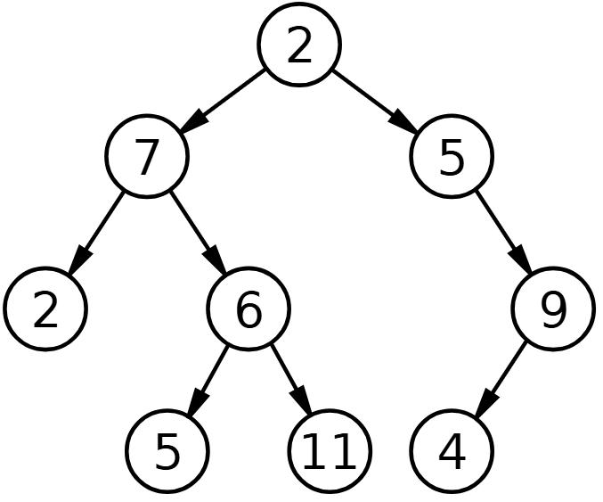

Lecture 16: Trees
A tree is a collection of nodes connected by directed edges, with no cycles. (A cycle means that you can get to the same node by following two different paths; in a tree, that can't happen.) The node where an edge originates is called the parent node, and the node it points to is called the child node. Every node in a tree must have exactly one parent, except for the root node, which has none. A node with no children is called a leaf.
The depth of a node refers to the number of edges needed to get from the root to the node. The height a tree is the maximum depth of a node. A subtree consists of a node together with all of its descendants. (It can be proven that a subtree is always a tree.) A binary tree is a tree in which each node has at most two children, commonly referred to as left and right.
For example, a binary tree might look like this (image taken from Wikipedia):

As with linked lists, you can create a binary tree simply by defining a Node
class; for simple applications, you don't need a separate Tree class because
you can identify the tree with its root. For example, here's an implementation of a
binary tree that stores int data:
template <typename T>
struct Node {
Node* left;
T value;
Node* right;
Node(const T& v) : left{nullptr}, value{v}, right{nullptr} {}
};Examples
Many things naturally have a tree structure.
For example, a mathematical expression has a tree structure: a single expression is made up of subexpressions, which naturally form a tree. (If we only use binary operations, then this will be a binary tree.)
User interfaces also naturally have a tree structure. The entire interface may consist of several components, each of which may themselves contain multiple components, and so on.
Traversing a tree
If we're going to store data in a tree, then we need to be able to recover all of the data later; that means that we need to be able to visit every node in the tree. There are two main ways of doing that: breadth-first search and depth-first search.
Breadth-first search (BFS) means that you first read the data from the parent, then all the data at depth 1, then all the data at depth 2, and so on. This means that you must read every node at depth $n$ before reading any of their children at depth $n+1$, so you must keep track of those children for later. This can be accomplished using a queue: each time you read a node, add its children to the queue. (Make sure you can see why this results in a breadth-first search!)
Depth-first search (DFS) means that you first read all the way down one path to a leaf before
backtracking to a different path. If we assume for the sake of simplicity that we are
dealing with a binary tree, then there are three different ways to implement this. Note that
all three methods can be implemented recursively; whatever overall strategy we've chosen, we
use the same strategy to read the data in left and in right.
-
First read
left, then the root node, thenright. This is called in-order traversal. If the data in your tree is sorted so that data to the left is always less than data to the right (a situation we'll discuss later), then in-order traversal produces a sorted list. -
First read the root node, then
left, thenright. This is calledpreordertraversal. It is convenient when trying to copy a tree, since you first copy a node and then copy its children. -
First read
left, thenright, then the root node. This is called postorder traversal. This is what you would use if you were evaluating a mathematical expression stored as a tree: you need to evaluate the subexpressions first before you can combine them together. It's also what you would use to delete a tree, so that you delete all the children before deleting the parent node.
Exercises
Implement all four ways of traversing a tree. (We won't spend class time doing all four, but you can try the rest on your own.)
Binary Search Trees
One of the most important types of tree is a Binary Search Tree (BST). In a BST,
every piece of data in left is less than the data in the parent node, and
every piece of data in right is greater than the data in the parent node.
As mentioned above, this ensures that when you perform in-order traversal, you get the
data in sorted order.
With our crude Node class above, the user manually assigns the
left/right pointers when inserting a new piece of data. For a
BST, each new piece of data needs to be inserted in a particular place, so we don't
expect users of our code to do that manually. Instead, the BST provides an insert()
method that automatically finds the correct place to insert the data.
Besides keeping your data sorted, another major advantage of a BST is that it makes it faster
to check whether a particular value is stored in the tree. Assuming the value you're looking
for isn't stored in the root node, you need only check one of left and right,
depending whether the desired value is less than or greater than the value in the root. Thus you need only
search along one path; if you reach a leaf and you still haven't found the value, then you know it's not
in the tree. Therefore find() in a BST is $O(h)$, where $h$ is the height of the tree.
If the tree has $N$ pieces of data and it's reasonably balanced, then $h \approx \log_2 N$, so
find() will be a $O(\log N)$ operation. (This should be unsurprising -- it's
essentially binary search.) Unfortunately, it's possible for a BST to become unbalanced. For example,
if the data is already sorted when it's inserted, then each new node will be the right child of the
previous node, and we essentially get a linked list rather than a tree. In this case, $h \approx N$, so
find() becomes a $O(N)$ operation.
In order to avoid that situation, we would like our BST to be self-balancing. A red-black tree is a self-balancing BST. You may find it interesting to look up how it works, but we won't worry about that now.
Finally, removing a piece of data from a BST can be a little bit tricky. If the data is in a leaf, then it's easy: you can delete the leaf without disturbing other data. If the data is in a node with one child, that's not too hard either: when the node is deleted, its child becomes the child of the original node's parent. But if the data to be deleted is in a node with two children, deleting the node is trickier: where would those two children go? But there's a nice trick to solve this problem: instead of deleting the node, we find a different node that can be deleted easily, and whose data can be safely moved into the now-empty node. Specifically, the in-order successor is the leftmost node of the right subtree, which is the smallest value greater than the node being removed. We can easily delete that node, because it has at most one child, and then move the data from that node into the now-empty node. (Make sure you understand why this maintains the sorting!)
Here's some working code for a simple BST. (For simplicity, the Rule of Five methods other than the destructor are omitted.) Make sure you understand how it works. Note that most of the BST functions are delegated to functions which take a single node as argument, so that they can be called recursively.
template <typename T>
class BinarySearchTree {
public:
BinarySearchTree() : root_{nullptr} {}
~BinarySearchTree() { destroy(root_); }
void insert(const T& value) { root_ = insert(root_, value); }
bool contains(const T& value) const { return contains(root_, value); }
void remove(const T& value) { root_ = remove(root_, value); }
std::vector<T> inorder() const { std::vector<T> v; return inorder(root_, v); }
private:
struct Node {
Node* left;
T value;
Node* right;
Node(const T& v) : left{nullptr}, value{v}, right{nullptr} {}
};
Node* root_;
void destroy(Node* node) {
if (!node) return;
destroy(node->left);
destroy(node->right);
delete node;
}
Node* insert(Node* node, const T& value) {
if (!node) return new Node(value);
if (value < node->value) node->left = insert(node->left, value);
else if (value > node->value) node->right = insert(node->right, value);
return node; // Don't add duplicate node
}
bool contains(Node* node, const T& value) const {
if (!node) return false;
if (value == node->value) return true;
if (value < node->value) return find(node->left, value);
return contains(node->right, value);
}
Node* remove(Node* node, const T& value) {
if (!node) return nullptr;
if (value < node->value) node->left = remove(node->left, value);
else if (value > node->value) node->right = remove(node->right, value);
else {
if (!node->left) { Node* temp = node->right; delete node; return temp; }
if (!node->right) { Node* temp = node->left; delete node; return temp; }
Node* next = node->right;
while (next->left) next = next->left;
node->value = next->value;
node->right = remove(node->right, next->value);
}
return node;
}
std::vector<T>& inorder(Node* node, std::vector<T>& v) const {
if (!node) return v;
inorder(node->left, v);
v.push_back(node->value);
inorder(node->right, v);
return v;
}
};Library classes using trees
In C++, std::sets (which is defined in the <set>< header) stores unique
elements in sorted order. (Recall that if you don't care about sorting, you can use std::unordered_set,
which uses a hash table.) Similarly, if you want each key to have an associated value, you can use
std::map (which is defined in the <map>< header), just as we used
std::unordered_map when we didn't care about ordering.
Both std::set and std::map use red-black trees to ensure good performance.
Priority Queues
Another application of trees is a priority queue. In a priority queue, much like a normal queue, you can only access the "next" element. But in a priority queue, the next element is determined by which element has the highest priority, rather than which one was inserted first.
For this lecture, we'll keep things simple and assume that the highest-priority data is simply the highest value stored in the queue. If you wanted to be able to determine the priority of a piece of data separately from its value, you could simply store key-value pairs in the priority queue, where the key determines the priority of the corresponding value.
A priority queue can be implemented using a binary tree where every node is greater than both of its children. Specifically, it's implemented using a binary max heap, which means that it is filled top-to-bottom and left-to-right, so that each level is filled before starting the next level.
A neat trick about creating a binary max heap is that you don't need to bother with all the nodes and
pointers that we normally use for trees: a binary max heap can be represented by a single array.
Specifically, the array corresponds to what we would get by reading the tree top-to-bottom and left-to-right,
so that index 0 is the root, then indices 1 and 2 correspond to the first level, and so on. You can check
that with this ordering, the parent of node i is (i - 1) / 2, the left child is
2*i + 1, and the right child is 2*i + 2.
Here's a working implementation of a priority queue:
#include <utility> // For std::swap
template <typename T>
class PriorityQueue {
public:
PriorityQueue() : size_{0}, capacity_{15}, data_{new T[capacity_]} {
data_ = new T[capacity_];
}
~PriorityQueue() { delete[] data_; }
void push(const T& value) {
if (size_ == capacity_) grow();
data_[size_++] = value;
sift_up(size_ - 1);
}
void pop() {
if (size_ == 0) return;
data_[0] = data_[--size_];
sift_down(0);
}
const T& top() const { return data_[0]; }
bool empty() const { return size_ == 0; }
int size() const { return size_; }
private:
int size_;
int capacity_;
T* data_;
void sift_up(int i) {
while (i > 0) {
int parent = (i - 1) / 2;
if (data_[i] <= data_[parent]) return;
std::swap(data_[i], data_[parent]);
i = parent;
}
}
void sift_down(int i) {
while (true) {
int largest = i;
int left = 2 * i + 1;
int right = 2 * i + 2;
if (left < size_ && data_[left] > data_[largest]) largest = left;
if (right < size_ && data_[right] > data_[largest]) largest = right;
if (largest == i) return;
std::swap(data_[i], data_[largest]);
i = largest;
}
}
void grow() {
capacity_ = 2 * capacity_ + 1;
T* newData = new T[capacity_];
for (int i = 0; i < size_; i++) newData[i] = data_[i];
delete[] data_;
data_ = newData;
}
};std::priority_queue
The std::priority_queue type is defined in the queue header. See
here
for more information. Note that it allows you to provide a compare function to determine the
priority order.
LeetCode Exercises
The following exercises can be solved using a priority queue:
Easy:
Medium: